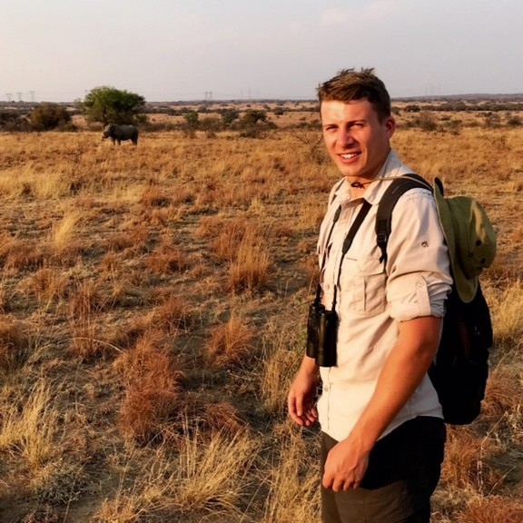

The problem
Most young people get no help on starting their career.
1,000,000+ young people in the UK are not in education, employment, or training. They want to work. But knowing where to start is, for many, a complete unknown.
For those who do land a first job, mentorship is rarely available. Only the largest organisations have the resource to run mentor programmes. Leaving junior employees to figure it out alone.
Meanwhile, every year hundreds of thousands of senior professionals retire. Taking with them professional networks and decades of expertise that the next generation is desperate for, with no way of passing it down.
There's a severe knowledge gap at the start of a career. And a huge knowledge drain at the end of one.
Mantle exists to bridge this gap.
Our vision
We want to solve the graduate job crisis through the expertise, guidance and support of the UK's most successful ex-senior leaders.
We're building the infrastructure that takes the knowledge drain from the end of a career, and uses it to fill the knowledge gap experienced at the start of a career.
Get the guidance, network, and advice they need to break into the industry and thrive in it.
Pass on what they know and share their expertise with the next generation.
Our team
A small London-based team with deep experience building startups. On a mission to solve one of the UK's most urgent structural issues.
.jpeg)
